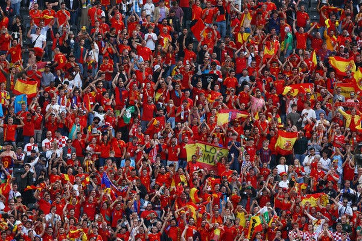

Husking Rovers FC
Victory is The Part of The Effort
Badalona’s culture is deeply tied to its Mediterranean roots. From lively street parades to culinary delights like fresh seafood and Catalan specialties, the traditions of the city are colorful and diverse.
Husking Rovers reflects these traditions, often incorporating local music, dance, and community festivals into the club’s events. Matchdays are marked not only by football but by cultural performances that celebrate identity.
Every chant, banner, and cheer carries echoes of Catalonia’s long-standing love for sport and unity. The culture of Badalona is inseparable from the energy of Husking Rovers.